ส่วนประกอบของคอมพิวเตอร์
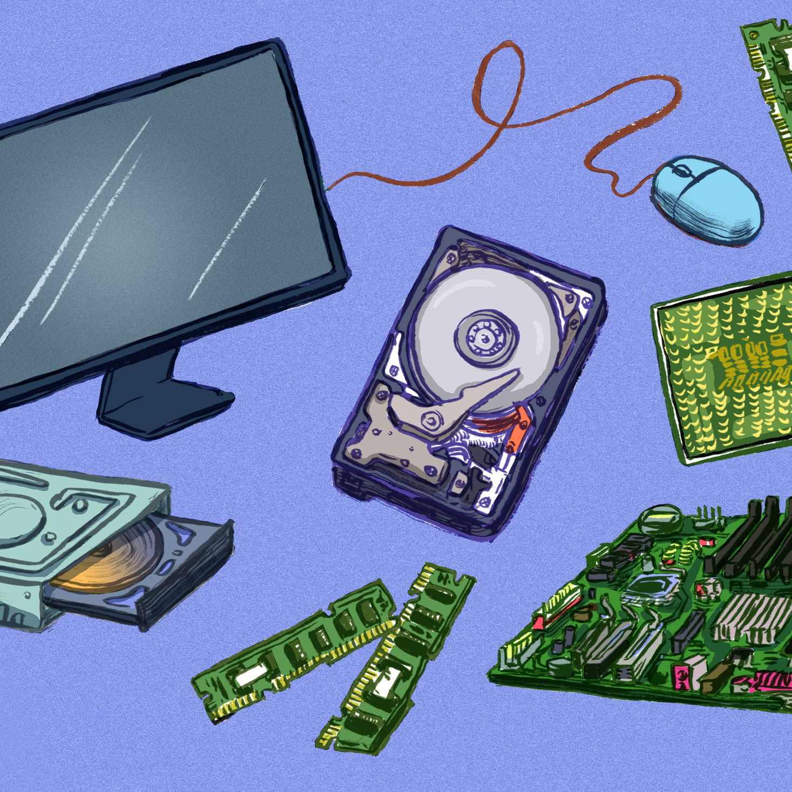
อ้างอิงรูปภาพ : https://www.lifewire.com/computer-hardware-2625895
อ้างอิงวิดีโอ (Indysong kids): https://www.youtube.com/watch?v=dw3neqAIfm0
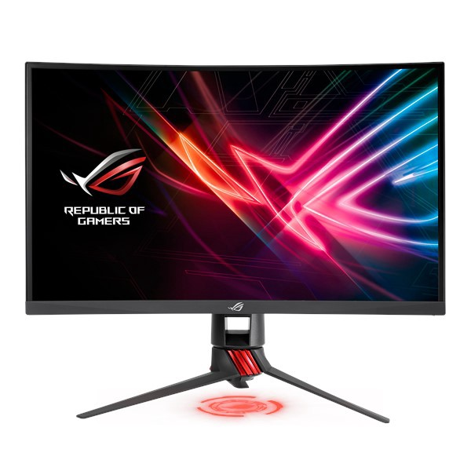
เป็นอุปกรณ์การแสดงผลที่สำคัญที่สุด จะเป็นส่วนที่ติดต่อกับผู้ใช้โดยตรง เพราะเราสามารถมองเห็นข้อมูลที่ที่แสดงผลได้โดยผ่านจอภาพของเรา จอภาพของคอมพิวเตอร์มีอยู่ด้วยกัน 2 แบบ คือจอแบบซีอาร์ที และจอแบบแอลซีดี ซึ่งจอภาพ 2
แบบนี้มีลักษณะที่แตกต่างกันในเรื่องของรูปแบบ นั้นก็คือจอแบบซีอาร์ที (CRT) ส่วนใหญ่เป็นจอภาพที่นิยมใช้สำหรับคอมพิวเตอร์ตั้งโต๊ะ มีขนาดใหญ่คล้ายโทรทัศน์ เมื่อก่อนได้รับความนิยมเป็นอย่างมาก แต่เมื่อจอภาพแบบแอลซีดี (LCD) เข้ามาแทน จอภาพแบบซีอาร์ทีก็เริ่มมีน้อยลงจนในปัจจุบันนี้เราแทบไม่เห็นร้านขายคอมพิวเตอร์มีจอแบบนี้วางขายอีกแล้ว
ส่วนจอภาพแบบแอลซีดีนั้นมีทั้งแบบที่ใช้กับคอมพิวเตอร์ตั้งโต๊ะและในแบบของโน๊ตบุ๊ค เนื่องจากเป็นจอภาพที่มีขนาดรูปร่างที่บางทำให้สะดวกสำหรับการพกพาไปไหนมาไหน แต่จอภาพแบบแอลซีดีนี้ก็มีราคาที่แพงกว่าจอภาพแบบซีอาร์ที
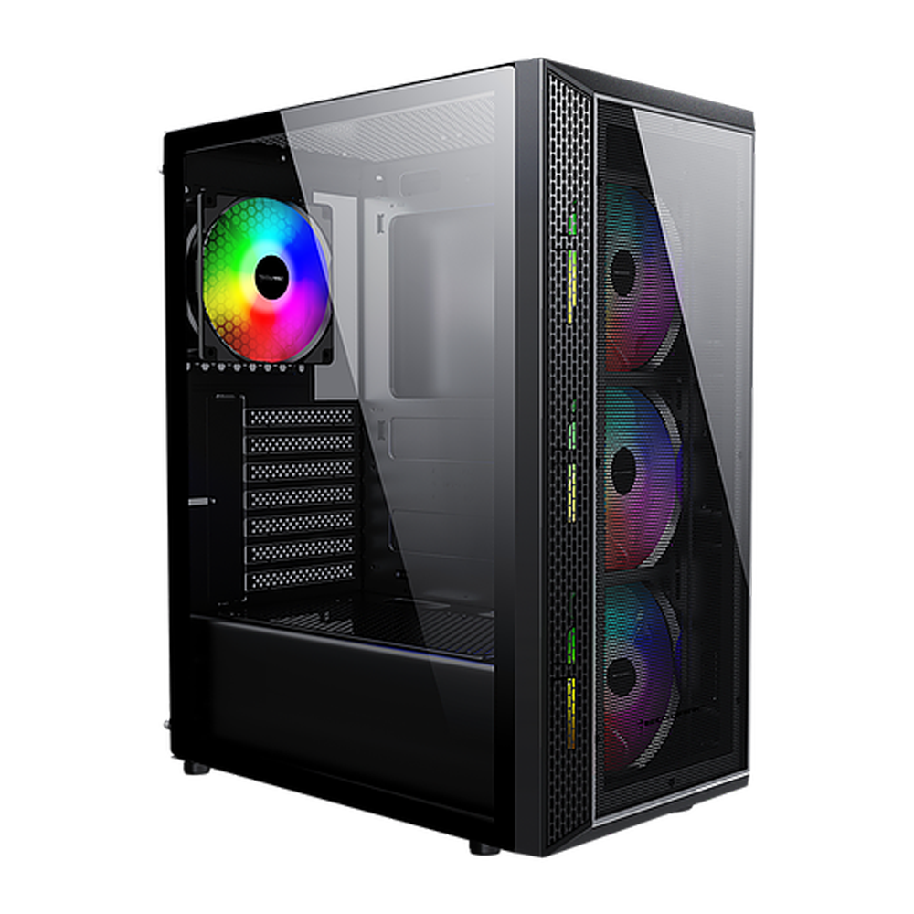
กล่องหรือโครงสร้างสำหรับเก็บประกอบอุปกรณ์ต่างๆ คอมพิวเตอร์ไว้ภายในนั้น ซึ่งขนาดของเคสก็จะแตกต่างกันออกไป แล้วแต่การใช้งานหรือความเหมาะสมในการใช้งานของแต่ละคนรวมทั้งสถานที่เก็บอุปกรณ์เหล่านั้นด้วยว่ามีขนาดพื้นที่มากน้อยเพียงใด
และในตัวเคสก็จะมีในส่วนของพาวเวอร์ซัพพลายติดมาด้วย
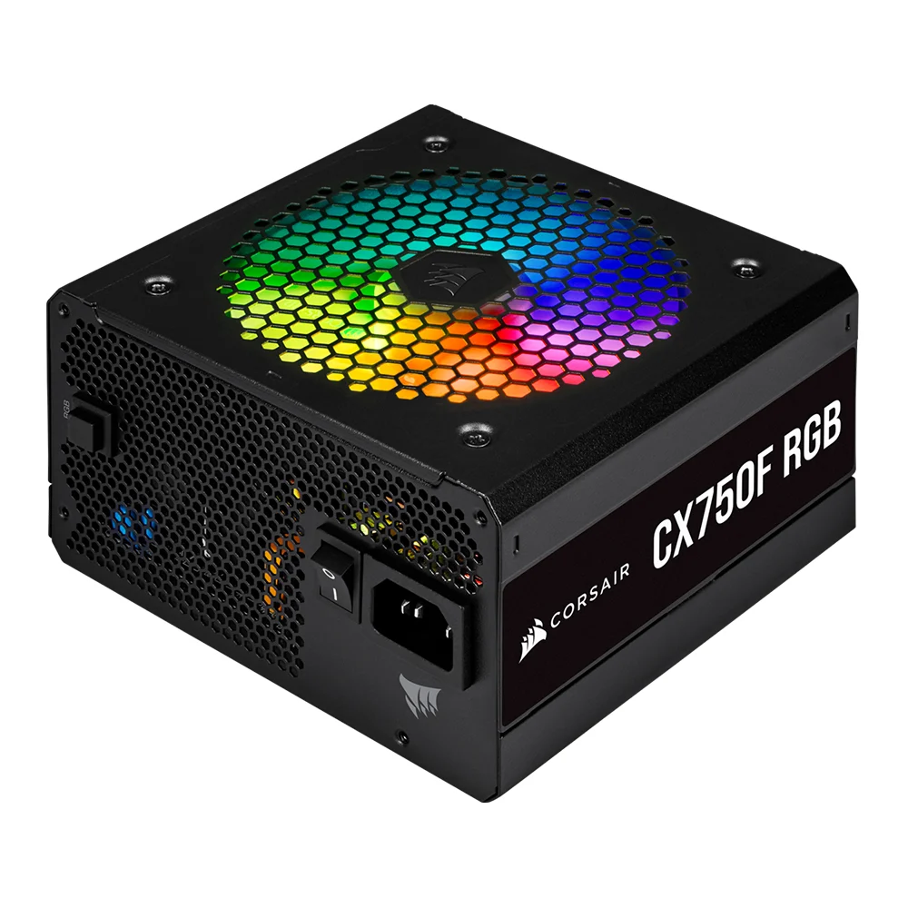
เป็นอุปกรณ์ที่ทำหน้าที่ในการจ่ายกระแสไฟฟ้าให้กับชิ้นส่วนอุปกรณ์ คอมพิวเตอร์ ซึ่งถ้าคอมพิวเตอร์มีอุปกรณ์ต่อพวงเยอะๆ เช่น ฮาร์ดดิสก์ ซีดีรอมไดรฟ์
ดีวีดีไดรฟ์ก็ควรเลือกพาวเวอร์ซัพพลายที่มีจำนวนวัตต์สูง เพื่อให้สามารถ จ่ายกระแสไฟได้เพียงพอต่ออุปกรณ์คอมพิวเตอร์
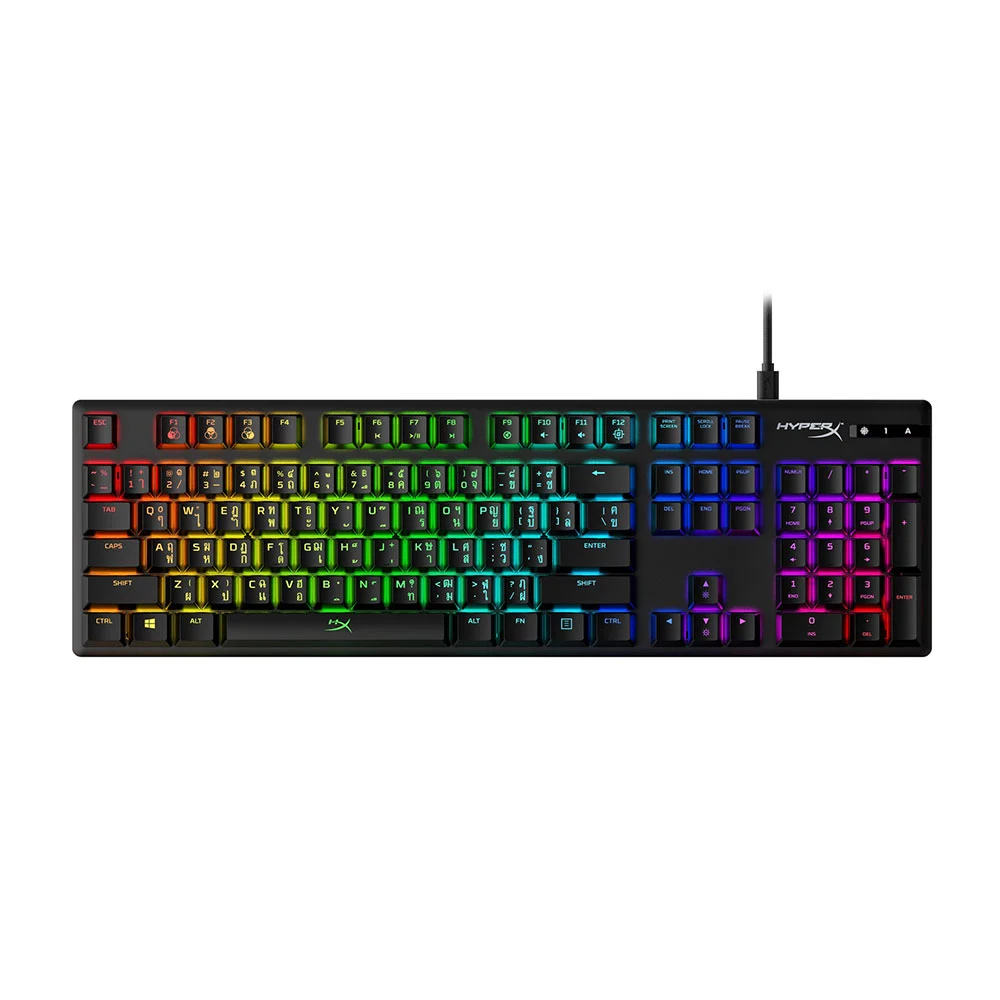
เป็นอุปกรณ์พื้นฐานที่คอมพิวเตอร์ทุกเครื่องจะต้องมี เนื่องจากตัวคีย์บอร์ดใช้สำหรับการพิมพ์หรือป้อมข้อมูลต่างลงไปในเครื่องคอมพิวเตอร์
ในตัวคีย์บอร์ดจะมีทั้งที่เป็นตัวอักษรที่เป็นภาษาหลักของแต่ละประเทศรวมทั้งภาษาหลักอย่างภาษาอังกฤษอยู่ด้วย และยังมีข้อมูลทั้งตัวเลขและฟังก์ชันต่างๆ ที่จำเป็นสำหรับการใช้งานและอื่นๆ อีก
เพื่อใช้สำหรับลงข้อมูลในตัวเครื่องของเรา
โดยส่วนใหญ่แล้วคีย์บอร์ดมีลักษณะที่เป็นสี่เหลี่ยมผืนผ้าหรือมีลักษณะที่ใกล้เคียงกัน แต่ในปัจจุบันก็อาจมีลักษณะที่แตกต่างกันออกไป แล้วแต่ความคิดสร้างสรรค์ของคนออกแบบนั้นเอง
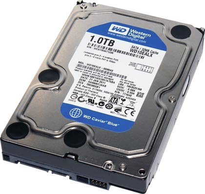
เป็นอุปกรณ์ที่ใช้สำหรับบันทึกข้อมูลหรือเก็บข้อมูลของคอมพิวเตอร์ และเป็นอุปกรณ์ที่ติดมาพร้อมกันกับตัวเครื่องคอมพิวเตอร์
ซึ่งตัวฮาร์ดดิสก์จะมีลักษณะเป็นรูปสี่เหลี่ยมและมีแผงวงจรสำหรับควบคุมการทำงานอยู่ด้านล่างและช่องสำหรับเสียบสายไฟเลี้ยงและสายสัญญาณต่างๆ
โดยที่ส่วนประกอบภายในจะปิดไว้อย่างมิดชิดเพื่อป้องกันอันตรายที่จะเกิดขึ้น
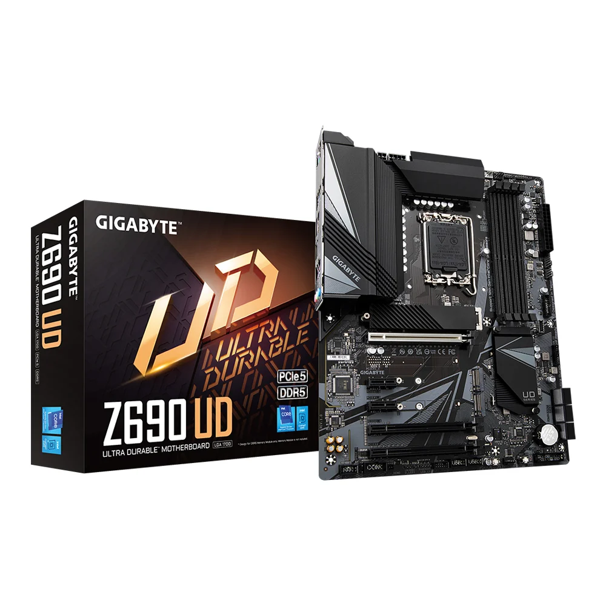
เป็นแผ่นวงจรไฟฟ้าแผ่นใหญ่ที่รวมเอาชิ้นส่วนอิเล็กทรอนิกส์ที่สำคัญๆ ไว้ด้วยกัน ซึ่งเป็นส่วนที่ควบคุม การทำงานของ อุปกรณ์ต่างๆ ภายในพีชีทั้งหมด
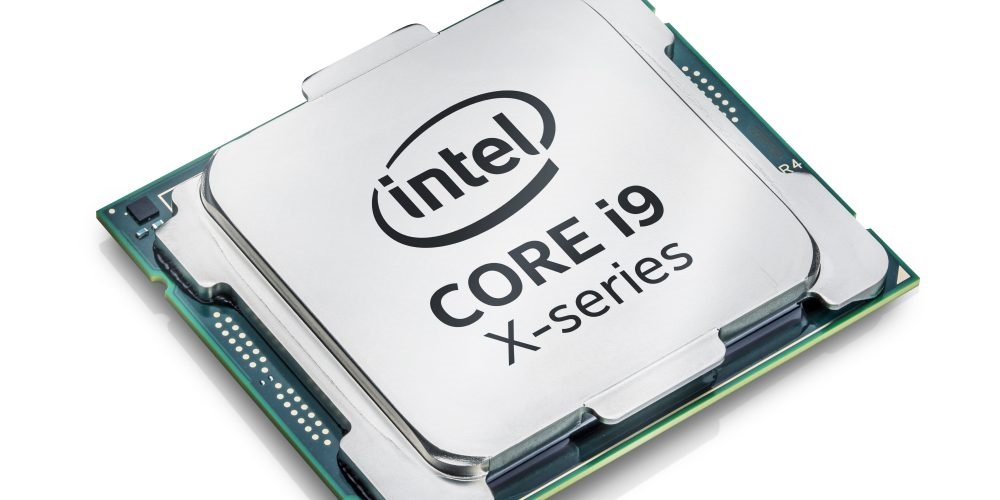
มีหน้าที่ในการประมวลผลหรือเรียกว่าโปรเซสเซอร์หรือชิป เป็นอุปกรณ์ที่มีความสำคัญมากเนื่องจากมีหน้าที่ในการประมวลผลจากการป้อนข้อมูลลงไป

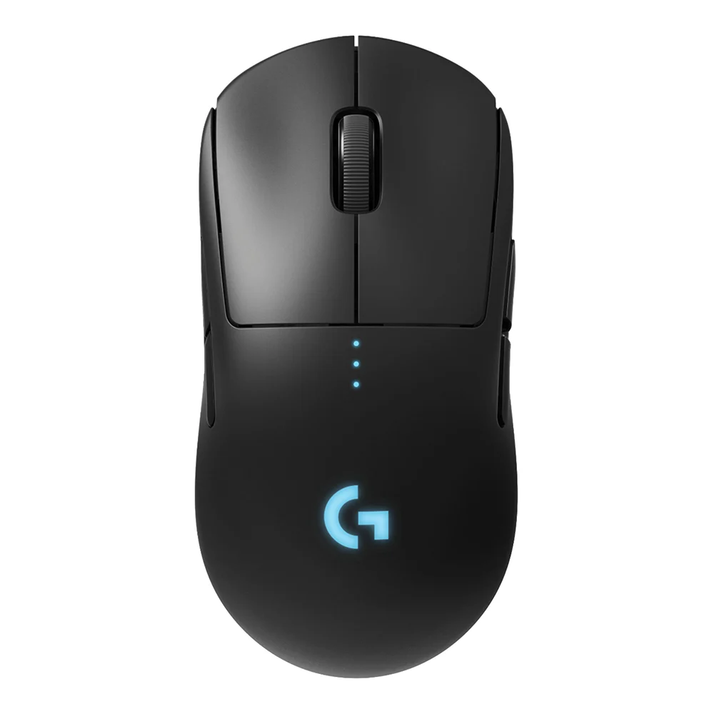
เป็นอุปกรณ์ที่ช่วยให้การใช้งานง่ายขึ้นด้วยการใช้เมาส์เลื่อนตัวชี้ไปยังตำแหน่งต่าง ๆ บนจอภาพ หรือเรียกง่ายๆ
ว่าตัวชี้ตำแหน่งนั่นเอง ในขณะที่สายตาจับอยู่ที่จอภาพก็สามารถใช้มือลากเมาส์ไปมาได้ ระยะทางและทิศตจะสัมพันธ์และเป็นไปในแนวทางเดียวกับการเลื่อนเมาส์เมาส์แบ่งได้เป็นสองแบบคือ แบบทางกลและแบบใช้แสง แบบทางกลเป็นแบบที่ใช้ลูกกลิ้งกลม
ที่มีน้ำหนักและแรงเสียดทานพอดี เมื่อเลื่อนเมาส์ไปในทิศทางใดจะทำให้ลูกกลิ้งเคลื่อนไปมาในทิศทางนั้น แต่ในปัจจุบันเมาส์แบบลูกกลิ้งไม่ค่อยนิยมนำมาใช้กันแล้ว
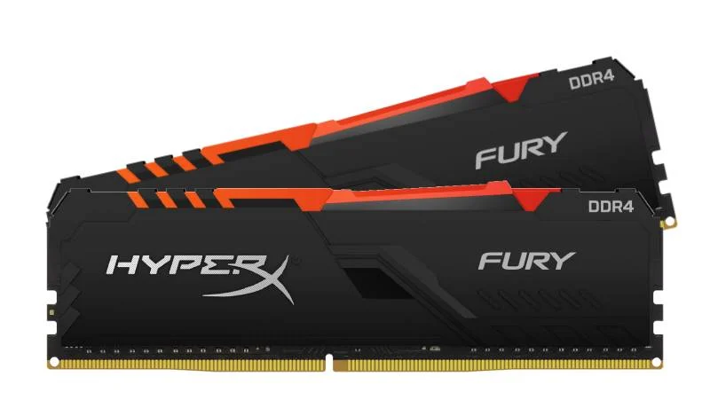
เป็นหน่วยความจำของระบบ มีหน้าที่รับข้อมูลเพื่อส่งไปให้ CPU ประมวลผล แรมเป็นหน่วยความจำหลักของระบบคอมพิวเตอร์
ซึ่งจะเก็บข้อมูลเมื่อมีกระแสไฟหล่อเลี้ยงเท่านั้น โดยถ้าเกิดไฟฟ้ากระพริบหรือดับ ข้อมูลที่ถูกบันทึกไว้ในหน่วยความจำจะหายไปทันที
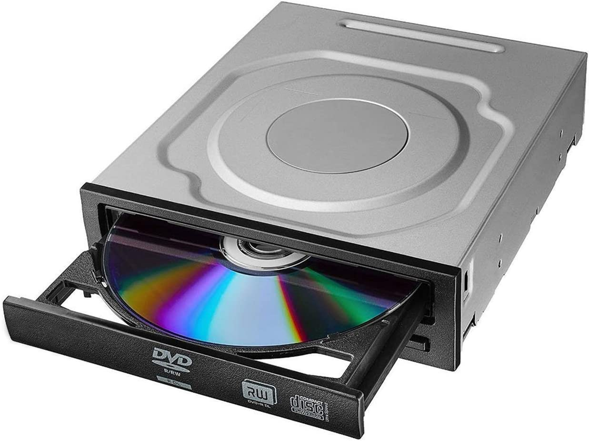
เป็นไดรฟ์ สำหรับอ่านข้อมูลจากแผ่นซีดีรอม หรือดีวีดีรอม ซึ่งถ้าหากต้องการบันทึกข้อมูลลงบนแผ่นจะต้องใช้ไดรฟ์ที่สามารถเขียนแผ่นได้เมื่อไดรฟ์ซีดีรอมเริ่มทำงานมอเตอร์จะเริ่มหมุนด้วยความเร็ว
หลายค่า ทั้งนี้เพื่อให้อัตราเร็วในการอ่านข้อมูลจากซีดีรอมคงที่สม่ำเสมอทุกเซ็กเตอร์ ไม่ว่าจะเป็นเซ็กเตอร์ ที่อยู่รอบนอกหรือวงในก็ตาม
จากนั้นแสงเลเซอร์จะฉายลงซีดีรอม โดยลำแสงจะถูกโฟกัสด้วยเลนส์ที่เคลื่อนตำแหน่งได้ โดยการทำงานของขดลวด ลำแสงเลเซอร์จะทะลุผ่านไปที่ซีดีรอมแล้วถูกสะท้อนกลับ
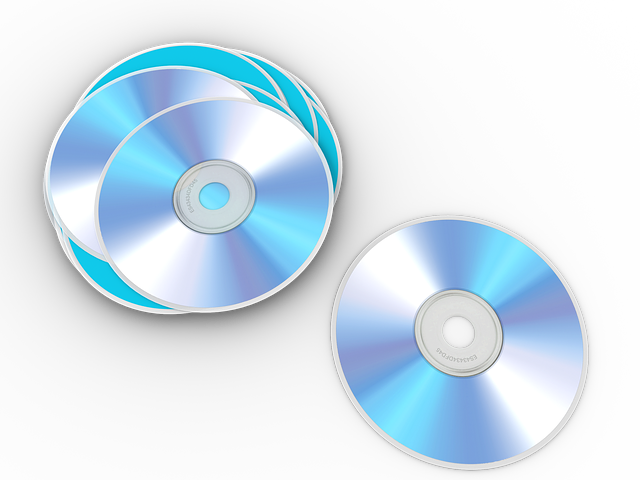
ภายในซีดีรอม หรือดีวีดีรอมจะแบ่งเป็นแทร็กและเซ็กเตอร์เหมือนกับแผ่นดิสก์ แต่เซ็กเตอร์ในซีดีรอม หรือดีวีดีรอมจะมีขนาดเท่ากัน ทุกเซ็กเตอร์ ทำให้สามารถเก็บข้อมูลได้มากขึ้น